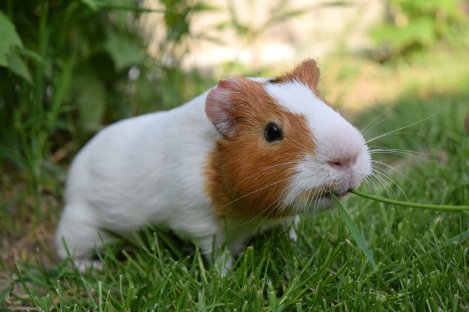
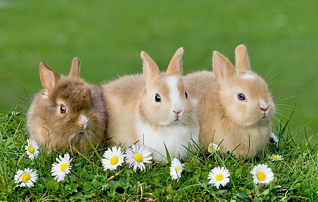
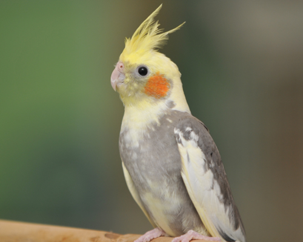

기니피그, 바디랭귀지 의미는?
1. 킁킁거리기
기니피그가 킁킁거리며 냄새를 맡는 의미는, 주변 환경에 대해 탐색하고 숨겨진 음식이 있는지 확인하는 것입니다.
기니피그들은 무슨일인지 궁금할 때, 호기심으로 거기에 뭐가 있는지 보려할때 주로 이 행동을 보입니다.
2. 머리를 위로 들기
(쓰다듬어주는 것) 귀여워 해주는 것에 짜증을 낼 때 나타나는 행동입니다. 기니피그의 머리를쓰다듬는 손을
머리를 들어올리며 쳐서, 주인이 그 행동을 중지하도록 요청하는 방식입니다.
detail


토끼의 몰랐던 사실!
1. 토끼의 식탐
토끼는 식탐이 엄청나서 하루 종일 먹어야 합니다. 밥그릇에 건초가 비워지지 않도록 많은 양을 주시거나 자주 채워주어야 합니다.
2. 토끼는 스트레스에 매우 약합니다
초식동물에 해당하여 생태계 먹이사슬에서 가장 아래에 해당하여 애완 토끼라해도 잠을 깊이 못 잘 정도로 본능적인 긴장과 스트레스가 있습니다.
겉으로는 편안해 보여도 사소한 자극에도 놀라기 때문에 시끄러운 소음을 피해 조용하고 편안한 환경을 항상 유지해주세요.
토끼 수명이 짧아진게 그러한 태생적인 스트레스 때문인지도 모릅니다.
detail
앵무새에 대한 오해!
1. 앵무새는 무조건 말을 한다?
앵무새는 무조건 말을 할 수 있는 것이 아닙니다. 물론 종류에 따라서 쉽게 말을 따라 하고 뚜렷하게 말을 하는 앵무새도 있지만,
대부분은 주인이 얼마나 노력을 하나에 달렸다고 할 수 있습니다. 따라서 주인이 말을 가르치기를 포기한다면 앵무새는 말은 하는 일은 거의 없을 것입니다.
물론 자주 듣는 말은 따라 하기도 하지만 가르치지도 않았는데 무조건 앵무새가 말을 할 수 있는 것은 아닙니다.
2. 앵무새는 손이 덜 갈까?
간혹 앵무새를 산책시키다 보면 앵무새는 다른 동물과 달리 새장에서만 키우니 손이 덜 가겠다는 말을 하는 분이 있습니다.
하지만, 앵무새는 어느 종이 됐든 간에 깃털이 날리게 되어 있어 청소를 자주 해주어야 합니다.
물론 종류에 따라서는 파우더로 불리는 깃털과 비듬이 날리는 양은 다르지만, 청소를 잘해주지 않으면 집안 이곳저곳에서 새털이 날리니 은근히 손이 많이 가는 동물이라고 할 수 있습니다.
detail
